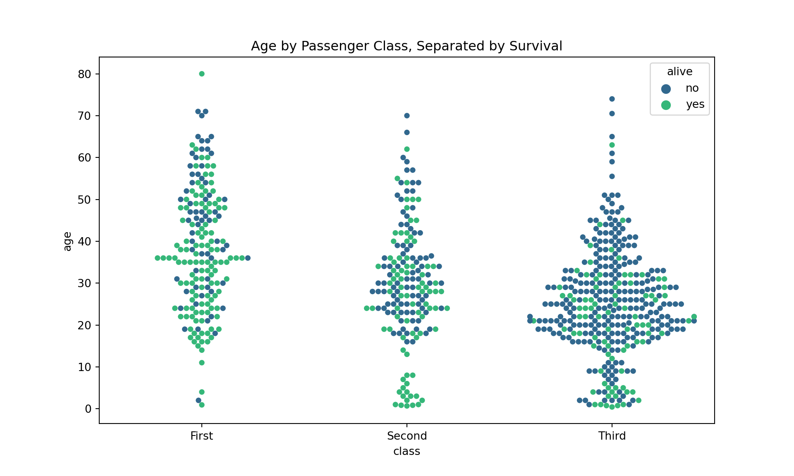

A Complete Guide to Plotting Categorical Variables
See how Seaborn & ggplot2 can make your plots looks nicer, convey more info, and require few lines of code.
Mohammad Hossein Malekpour
Mohammad Hossein Malekpour
Instructions:
Exploratory data visualization allows us to get an idea of the data, before starting any modeling. Usually scatter plot is a good choice to visualize data with numerical features which allows us to see relationships/ patterns within the data. The challenge starts when the data set includes Categorical variables (e.g., Country, Gender, Race). How do we visualize such a data set to understand patterns?
In this Dotto we will use Titanic dataset. This dataset is great because it has a decent number of entries — almost 900 — while also having an interesting story to dig into. There are lots of questions to ask and relationships between variables to explore making it a great example data set. Most critical for this article is that there is also a good mix of numerical and categorical variables to explore.
The common plots used to visualize categorical data are
Categorical Distribution Plots
We have two different kinds of categorical distribution plots, box plots and violin plots. These kinds of plots allow us to choose a numerical variable, like age, and plot the distribution of age for each category in a selected categorical variable.
Categorical Estimate Plot
Categorical Scatter Plots
Both strip plots and swarm plots are essentially scatter plots where one variable is categorical. I like to use them as additions to other kinds of plots, which we’ll discuss as they are useful for quickly visualizing the number of data points in a group.
Exploratory data visualization allows us to get an idea of the data, before starting any modeling. Usually scatter plot is a good choice to visualize data with numerical features which allows us to see relationships/ patterns within the data. The challenge starts when the data set includes Categorical variables (e.g., Country, Gender, Race). How do we visualize such a data set to understand patterns?
In this Dotto we will use Titanic dataset. This dataset is great because it has a decent number of entries — almost 900 — while also having an interesting story to dig into. There are lots of questions to ask and relationships between variables to explore making it a great example data set. Most critical for this article is that there is also a good mix of numerical and categorical variables to explore.
The common plots used to visualize categorical data are
Categorical Distribution Plots
We have two different kinds of categorical distribution plots, box plots and violin plots. These kinds of plots allow us to choose a numerical variable, like age, and plot the distribution of age for each category in a selected categorical variable.
Categorical Estimate Plot
Categorical Scatter Plots
Both strip plots and swarm plots are essentially scatter plots where one variable is categorical. I like to use them as additions to other kinds of plots, which we’ll discuss as they are useful for quickly visualizing the number of data points in a group.
Codes:
# There are a few lines of code that you'll need to run at the top of every notebook to set up your coding environment.
library(readr) # Read tabular data.
library(dplyr) # General data frame manipulation.
library(ggplot2) # Flexible plotting.
# Path of the file to read
auto_filepath <- "data/titanic.csv"
# Read the file into a variable titanic.csv
titanic <- read.csv(auto_filepath)
# Print the five random rows of the data
knitr::kable(sample_n(titanic, 5))# Import the libraries
import numpy as np
import pandas as pd
import seaborn as sns
from matplotlib import pyplot as plt
titanic = sns.load_dataset('titanic')
titanic.info()Results:
| X | survived | pclass | sex | age | sibsp | parch | fare | embarked | class | who | adult_male | deck | embark_town | alive | alone |
|---|---|---|---|---|---|---|---|---|---|---|---|---|---|---|---|
| 612 | 1 | 3 | female | NA | 1 | 0 | 15.5000 | Q | Third | woman | False | Queenstown | yes | False | |
| 304 | 0 | 3 | male | NA | 0 | 0 | 8.0500 | S | Third | man | True | Southampton | no | True | |
| 266 | 0 | 3 | male | 16 | 4 | 1 | 39.6875 | S | Third | man | True | Southampton | no | False | |
| 97 | 1 | 1 | male | 23 | 0 | 1 | 63.3583 | C | First | man | True | D | Cherbourg | yes | False |
| 674 | 0 | 2 | male | NA | 0 | 0 | 0.0000 | S | Second | man | True | Southampton | no | True |
## <class 'pandas.core.frame.DataFrame'>
## RangeIndex: 891 entries, 0 to 890
## Data columns (total 15 columns):
## survived 891 non-null int64
## pclass 891 non-null int64
## sex 891 non-null object
## age 714 non-null float64
## sibsp 891 non-null int64
## parch 891 non-null int64
## fare 891 non-null float64
## embarked 889 non-null object
## class 891 non-null category
## who 891 non-null object
## adult_male 891 non-null bool
## deck 203 non-null category
## embark_town 889 non-null object
## alive 891 non-null object
## alone 891 non-null bool
## dtypes: bool(2), category(2), float64(2), int64(4), object(5)
## memory usage: 80.6+ KB
Instructions:
Draw a box plot to show distributions with respect to categories.
Many of us have probably made quite a few box plots over the years. They are an easy and effective way to visualize groups of numerical data through their quartiles. Seaborn makes creating attractive box plots simple and allows us to easily compare an extra dimension with the hue argument that appears in many Seaborn functions.
Basic Boxplot
Lets take a look at distribution of age by passenger class. We can see that age tends to decrease as you go down in passenger class. That makes sense, young people tend to travel on a budget.
Adding colour
Like many other plots available in ggplot, geom_boxplot can take an added colour argument to add another variable for comparison. Adding the hue shows us that regardless of class the age of passengers that survived was generally lower than those who passed away. Having the colour for additional comparison allows this box plot to be quite information dense. The more complex the plot gets the longer it will take for viewers to comprehend it, but it is nice to have the option when interesting insights are more easily shown with an added dimension.
Draw a box plot to show distributions with respect to categories.
Many of us have probably made quite a few box plots over the years. They are an easy and effective way to visualize groups of numerical data through their quartiles. Seaborn makes creating attractive box plots simple and allows us to easily compare an extra dimension with the hue argument that appears in many Seaborn functions.
Basic Boxplot
Lets take a look at distribution of age by passenger class. We can see that age tends to decrease as you go down in passenger class. That makes sense, young people tend to travel on a budget.
Adding Hue
Like many other plots available in Seaborn, box plots can take an added hue argument to add another variable for comparison. Adding the hue shows us that regardless of class the age of passengers that survived was generally lower than those who passed away. Having the hue for additional comparison allows this box plot to be quite information dense. The more complex the plot gets the longer it will take for viewers to comprehend it, but it is nice to have the option when interesting insights are more easily shown with an added dimension.
Codes:
# Basic boxplot
ggplot(titanic,
aes(class, age)) +
geom_boxplot()+
ggtitle("Age by Passenger Class, Titanic")
# Adding colour
ggplot(titanic,
aes(class, age)) +
geom_boxplot(aes(colour = factor(survived)))+
ggtitle("Age by Passenger Class, Separated by Survival")# Basic Boxplot
plt.figure(figsize=(10, 6))
sns.boxplot(x='class', y='age', data=titanic, palette='rainbow')
plt.title("Age by Passenger Class, Titanic")
# Adding Hue
plt.figure(figsize=(10, 6))
sns.boxplot(x='class', y='age', data=titanic, palette='rainbow', hue='survived')
plt.title("Age by Passenger Class, Separated by Survival")
Results:
## <matplotlib.axes._subplots.AxesSubplot object at 0x000001BA444D1A20>## Text(0.5, 1.0, 'Age by Passenger Class, Titanic')## <matplotlib.axes._subplots.AxesSubplot object at 0x000001BA472F09E8>
Instructions:
Draw a combination of boxplot and kernel density estimate with Violin Plots.
Violin plots are not very frequently used but I have found them to be useful on occasion, and they are an interesting change from more popular options. They plot a vertical kernel density plot for each category and a small box plot to summarize important statistics.
Draw a combination of boxplot and kernel density estimate with Violin Plots.
Violin plots are not very frequently used but I have found them to be useful on occasion, and they are an interesting change from more popular options. They plot a vertical kernel density plot for each category and a small box plot to summarize important statistics.
It is easier to compare the genders with slightly different formatting: When we split the violin on the hue it is a lot easier to see the differences in each KDE. However, the IQR stats aren’t split by the sex anymore; instead they apply to the entire class. So there are trade-offs to styling your plot in certain ways.
Codes:
# Basic violinplot
ggplot(titanic,
aes(class, age)) +
geom_violin() +
ggtitle("Violin Plot of Age by Class")
# Adding colour
ggplot(titanic,
aes(class, age)) +
geom_violin(aes(colour = factor(sex))) +
ggtitle("Violin Plot of Age by Class, Separated by Sex")# Basic Violinplot
plt.figure(figsize=(10,6))
sns.violinplot(x='class',y="age",data=titanic, hue='sex', palette='rainbow')
plt.title("Violin Plot of Age by Class, Separated by Sex")
# Adding Split
plt.figure(figsize=(10, 6))
sns.violinplot(x='class', y="age", data=titanic, hue='sex', split='True', palette='rainbow')
plt.title("Violin Plot of Age by Class, Separated by Sex")
Results:
## <matplotlib.axes._subplots.AxesSubplot object at 0x000001BA4524D438>## Text(0.5, 1.0, 'Violin Plot of Age by Class, Separated by Sex')## <matplotlib.axes._subplots.AxesSubplot object at 0x000001BA4894F2E8>
Instructions:
Bar charts are useful for comparing quantities corresponding to different groups. There are two types of bar charts: geom_bar() and geom_col(). geom_bar() makes the height of the bar proportional to the number of cases in each group (or if the weight aesthetic is supplied, the sum of the weights). If you want the heights of the bars to represent values in the data, use geom_col() instead. Check the documentation for more details.
Bar plots are classic. You get an estimate of central tendency for a numerical variable for each class on the x axis. Say we were interested in knowing the average fare price of passengers that embarked from different towns.
Seaborn will take the mean as default, but you can use other measures of central tendency as well. There is a noticeable difference between Cherbourg and the other two, let’s separate the bars by class to see who was boarding in each town.
we can see that the average fare price in Cherbourg was so high due to some very expensive first class tickets. The large error bar on the fare price in first class from Cherbourg is also interesting; that could mean there is a lot of separation between some very high price outlier tickets and the rest.
Codes:
ggplot(data = titanic,
aes(x = embark_town,
y = fare)) +
geom_col(aes(fill = factor(class))) +
ggtitle("Fare of Passenger by Embarked Town, Divided by Class")# Basic Barplot
plt.figure(figsize=(10, 6))
sns.barplot(x='embark_town', y='fare', data=titanic, palette='rainbow')
plt.title("Fare of Passenger by Embarked Town")
# Adding Hue
plt.figure(figsize=(10, 6))
sns.barplot(x='embark_town', y='fare', data=titanic, palette='rainbow', hue='class')
plt.title("Fare of Passenger by Embarked Town, Divided by Class")
Results:
## <matplotlib.axes._subplots.AxesSubplot object at 0x000001BA49C3B198>## Text(0.5, 1.0, 'Fare of Passenger by Embarked Town')## <matplotlib.axes._subplots.AxesSubplot object at 0x000001BA47385048>
Instructions:
The jitter geom is a convenient shortcut for geom_point(position = “jitter”). It adds a small amount of random variation to the location of each point, and is a useful way of handling overplotting caused by discreteness in smaller datasets.
A geom that draws a point defined by an x and y coordinate, like geom_point, but jitters the points.
Default statistic: stat_identity Default position adjustment: position_jitter
Parameters
- x - (required) x coordinate of the point
- y - (required) y coordinate of the point
- size - (default: 0.5) diameter of the point
- shape - (default: 16=dot) the shape of the point
- colour - (default: “black”) the color of the point
- fill - (default: NA) the fill of the point (only a small minority of shapes actually can be filled; see shape)
- alpha - (default: 1=opaque) the transparency of the point
- na.rm - (default: FALSE) silently remove points with NA coordinates
Draw a scatterplot where one variable is categorical.
A strip plot can be drawn on its own, but it is also a good complement to a box or violin plot in cases where you want to show all observations along with some representation of the underlying distribution.
Input data can be passed in a variety of formats, including:
- Vectors of data represented as lists, numpy arrays, or pandas Series objects passed directly to the
x,y, and/orhueparameters. - A “long-form” DataFrame, in which case the
x,y, andhuevariables will determine how the data are plotted. - A “wide-form” DataFrame, such that each numeric column will be plotted.
- An array or list of vectors.
Codes:
ggplot(titanic, aes(class, age)) +
geom_jitter(aes(colour = alive))plt.figure(figsize=(10, 6))
sns.stripplot(x='class', y='age', data=titanic, jitter=True, hue='alive', dodge=True, palette='viridis')
Results:
Instructions:
Create a bee swarm plot. A bee swarm plot is a one-dimensional scatter plot similar to stripchart, but with various methods to separate coincident points such that each point is visible. Also, beeswarm introduces additional features unavailable in stripchart, such as the ability to control the color and plotting character of each point.
Swarm plots are fantastic because they offer an easy way to show the individual data points in a distribution. Instead of a big blob like the strip plot, the swarm plot simply adjusts the points along the x-axis. Although they also don’t scale well with tons of values, they offer more organized insight.
Here we can more easily see where the dense age groups are rather than the difficult to interpret strip plot in last Dot.
Codes:
library(ggbeeswarm)
ggplot(titanic, aes(class, age, col = alive)) + geom_beeswarm()plt.figure(figsize=(10, 6))
sns.swarmplot(x='class', y='age', data=titanic, hue='alive', dodge=True, palette='viridis')
plt.title("Age by Passenger Class, Separated by Survival")
Results:

## <matplotlib.axes._subplots.AxesSubplot object at 0x000001BA4909C400>